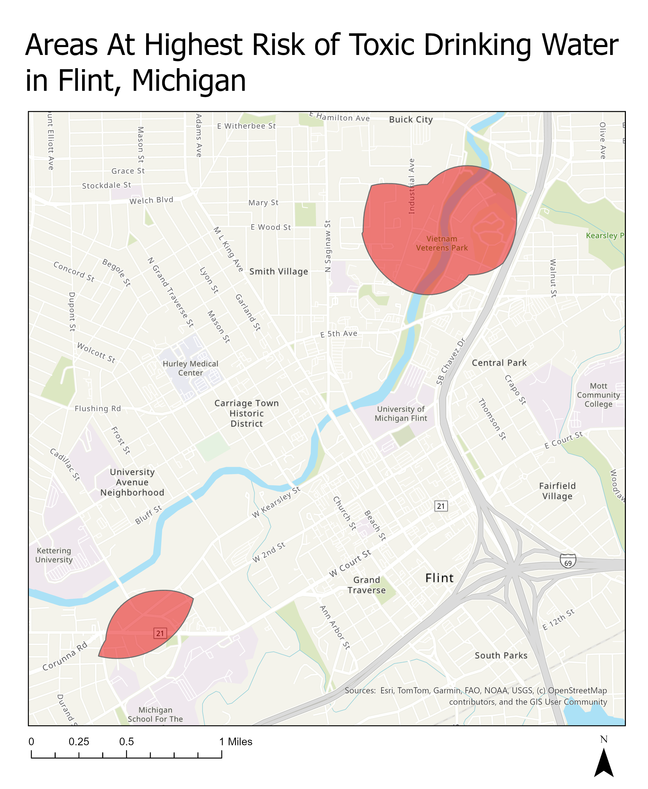

Zach Irons
A collection of my recent GIS projects.
A collection of my recent GIS projects.
In 2014 the city of Flint, Michigan switched its water supply from Lake Huron to the Flint River. Outdated water service lines, combined with negligent precautionary measures by government officials, resulted in dangerously high water lead levels in the city’s drinking water and a years-long public health crisis.
This study published in the American Journal of Public Health is a great summary of the events and their impact.
For this assignment we were given shapefiles of Michigan’s rivers, Flint’s water service lines, and Flint’s geographic boundaries. In addition, we received a shapefile of all EPA Toxic Release Inventory locations in Michigan with a data table including water pollution levels in tons of water for each location.
For this assignment were tasked with answering who is most at risk for drinking toxic tap water in Flint, Michigan based on the following criteria:
The resulting layout shows two areas along the Flint River that meet the criteria.

This assignment demonstrated how spatial analysis can offer unique insights in the world of public health and therefore the importance of GIS technologies.
TODO
TODO